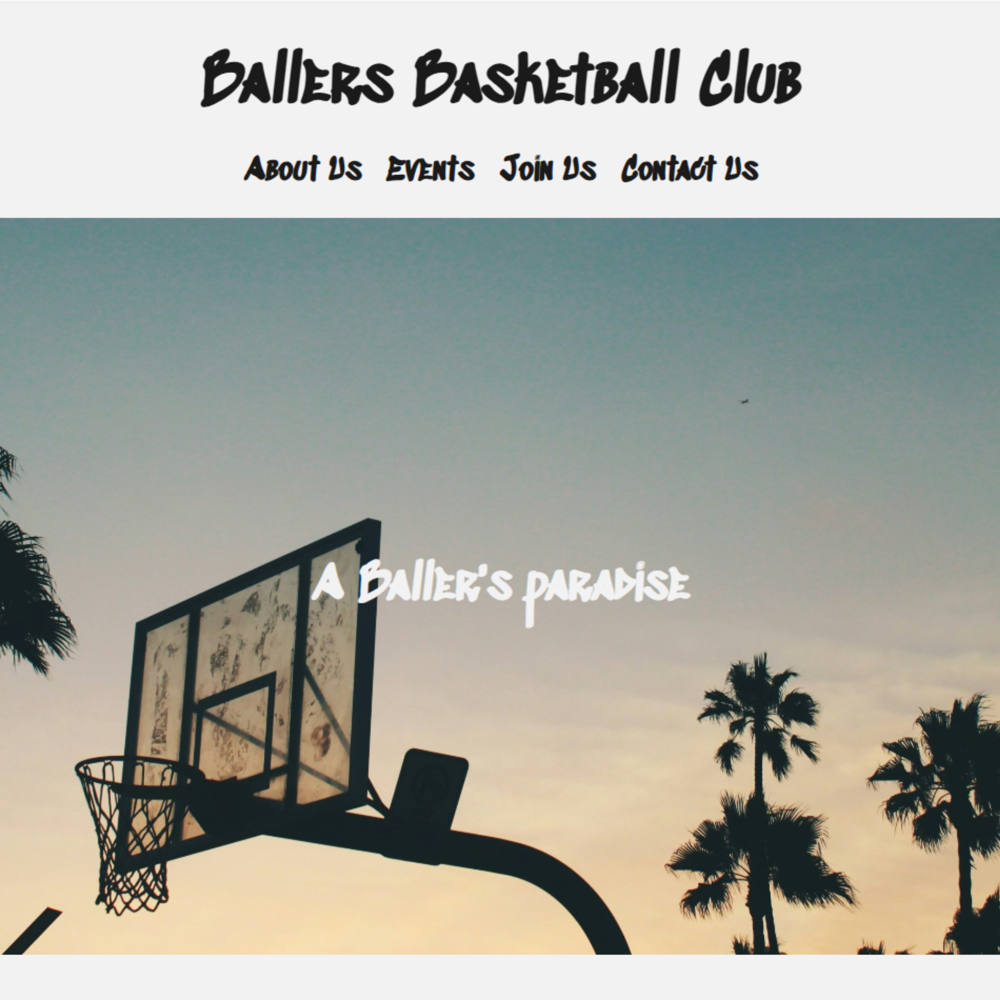

Responsive Club Website
The goal for this project was to make a website for a fake club. I chose a basketball club and used a unique graffiti esque font face and monochromatic color scheme to really embody pure basketball culture. The website needed to be responsive for multiple device screens. I achieved this using a combination of semantic HTML, CSS Flexbox and media queries.
Live Site